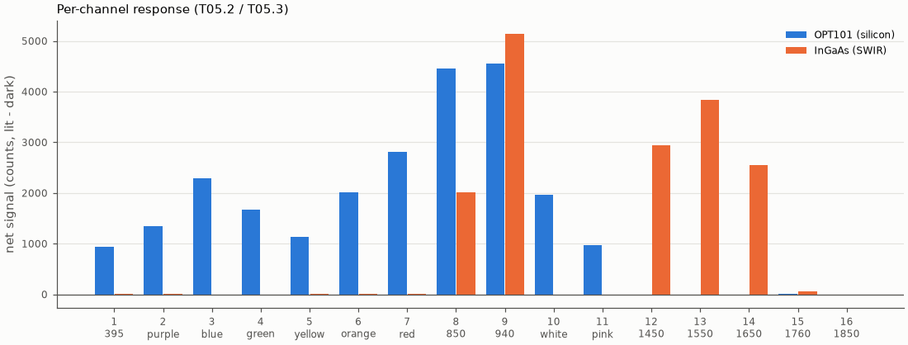
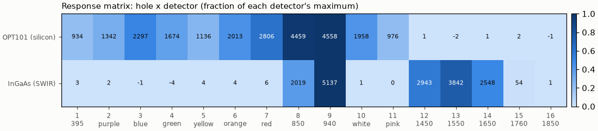
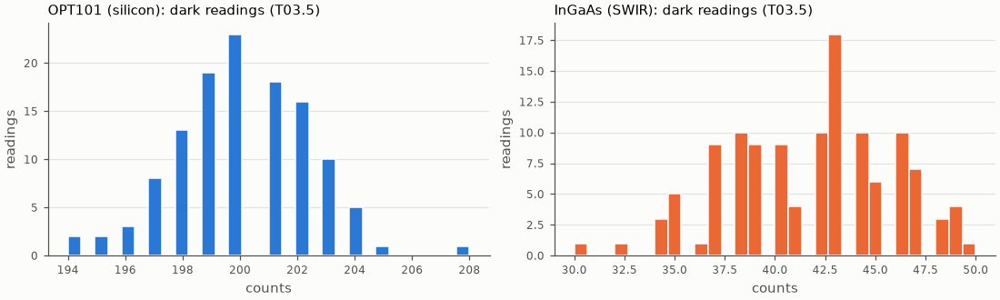
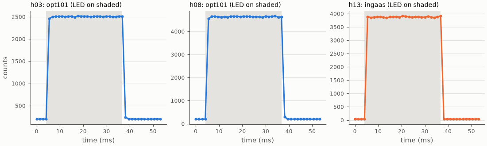
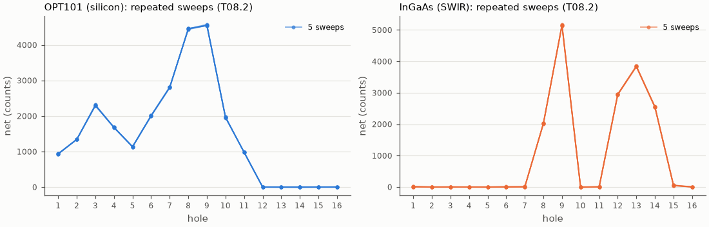

| Sample | none-empty-chamber | Operator | unknown |
|---|---|---|---|
| Firmware | 2.5.2 (proto 1, build 2026-11-16) | Config | b58eb4f57b1a (thresholds provisional) |
| Host | macOS-27.2.1-x86_64-i386-64bit, Python 3.12.11 | Software | lio 0.2.0, git ce9491f230 (dirty) |
| Results | PASS 43, SKIP 5 | ||
| LED duty | 147.9 s of cool-down waits; 0 over-budget on-time(s) | ||
| Test | Name | Status | Note |
|---|---|---|---|
| T01.1 | Python and dependency versions | ✓ PASS | |
| T01.2 | Serial port discovery | ✓ PASS | |
| T01.3 | Configuration loads and is self-consistent | ✓ PASS | |
| T02.1 | Port open and boot banner | ✓ PASS | |
| T02.2 | PING round-trip latency | ✓ PASS | |
| T02.3 | INFO fields, versions and safety limits | ✓ PASS | |
| T02.4 | Robustness to bad input | ✓ PASS | |
| T02.5 | Sequence numbers and interleaved events | ✓ PASS | |
| T02.6 | RESET restores the boot state | ✓ PASS | |
| T03.1 | I2C scan finds the ADS1115 | ✓ PASS | |
| T03.2 | Dark ADC noise, all inputs | ✓ PASS | |
| T03.3 | Gain sweep on dark inputs | ✓ PASS | |
| T03.4 | ADC data rate | ✓ PASS | |
| T03.5 | Long-term dark stability | ✓ PASS | |
| T04.1 | Shift-register patterns with CE low | ✓ PASS | |
| T04.2 | Shift-register loopback (optional jumper) | - SKIP | loopback jumper not fitted (this build has no loop-back input (pins.LOOP), plan §6.3); the shift registers are verified optically by T05.3 |
| T04.3 | Optical address verification | - SKIP | covered by T05.3 (each hole must light only its own expected response) |
| T04.4 | Walk test (operator) | ✓ PASS | |
| T05.1 | Rail gating by CE1 / CE2 | ✓ PASS | |
| T05.2 | Per-channel response | ✓ PASS | |
| T05.3 | Channel address and isolation | ✓ PASS | |
| T05.4 | Off-state return after each MEAS | ✓ PASS | |
| T05.5 | Repeatability (interleaved MEAS) | ✓ PASS | |
| T05.6 | Driver current with a meter (operator) | ✓ PASS | |
| T06.1 | OPT101 | ✓ PASS | |
| T06.2 | InGaAs TIA | ✓ PASS | |
| T06.3 | Cross-calibration on the shared holes | ✓ PASS | |
| T06.4 | Ambient light sensitivity (operator) | ✓ PASS | |
| T07.1 | Step response and settling time | ✓ PASS | |
| T07.2 | Recommended settle time | ✓ PASS | |
| T07.3 | MEAS timing | ✓ PASS | |
| T08.1 | SWEEP completes with a valid schema | ✓ PASS | |
| T08.2 | Repeated sweeps | ✓ PASS | |
| T08.3 | Sweep agrees with MEAS | ✓ PASS | |
| T08.4 | CSV output format | ✓ PASS | |
| T09.1 | Motion arming | ✓ PASS | |
| T09.2 | Each motor moves both ways | ✓ PASS | |
| T09.3 | MOTOR STOP latency | ✓ PASS | |
| T09.4 | Detector noise while a motor moves | ✓ PASS | |
| T09.6 | Full travel, both motors in lockstep | - SKIP | travel not measured: mark the top and bottom (Motors tab, or lio stage set-top / mark-bottom), or set thresholds.motion.travel.range_steps |
| T09.7 | Detectors while the chamber moves | - SKIP | travel not measured: mark the top and bottom (Motors tab, or lio stage set-top / mark-bottom), or set thresholds.motion.travel.range_steps |
| T10.1 | Power-up dark state | ✓ PASS | |
| T10.2 | On-time watchdog | ✓ PASS | |
| T10.3 | Comms-loss failsafe | ✓ PASS | |
| T10.4 | Single-channel invariant | ✓ PASS | |
| T10.5 | Motion disarmed after comms loss | ✓ PASS | |
| T11.1 | Comparison with the baseline | - SKIP | no baseline given (--baseline <file>); save one with --save-baseline |
| T13.1 | Diagnostic height sweep | ✓ PASS | quick scan COMPLETE: FUNCTIONAL (20261125-133833_scan_quick) |





| Check | Status | Result | Criterion |
|---|---|---|---|
Python versionT01.1/python |
✓ PASS | 3.12.11 | >= 3.10 |
pyserial installedT01.1/pyserial |
✓ PASS | 3.5 | importable |
pyyaml installedT01.1/pyyaml |
✓ PASS | 6.0.3 | importable |
numpy installedT01.1/numpy |
✓ PASS | 2.5.4 | importable |
matplotlib installedT01.1/matplotlib |
✓ PASS | 3.11.2 | importable |
jinja2 installedT01.1/jinja2 |
✓ PASS | 3.1.6 | importable |
| Check | Status | Result | Criterion |
|---|---|---|---|
Port discoveryT01.2/discovery |
✓ PASS | simulator target; 3 serial port(s) on this host recorded only |
| Check | Status | Result | Criterion |
|---|---|---|---|
Config validatesT01.3/load |
✓ PASS | lio_hw.yaml sha256 b58eb4f57b1a | |
16 holesT01.3/holes |
✓ PASS | 16 entries | |
Rails split A = 1-8, B = 9-16 (as built)T01.3/rails |
✓ PASS | A=[1, 2, 3, 4, 5, 6, 7, 8] B=[9, 10, 11, 12, 13, 14, 15, 16] |
| Check | Status | Result | Criterion |
|---|---|---|---|
Boot banner within the timeoutT02.1/banner |
✓ PASS | 1.61 s | <= 3 s |
Banner identifies LIO firmwareT02.1/identity |
✓ PASS | # BOOT name=lio fw=2.5.2 proto=1 build=2026-11-16 adc_ok=1 hw_wdt=0 | name=lio, fw and proto present |
| Check | Status | Result | Criterion |
|---|---|---|---|
Every PING answeredT02.2/answered |
✓ PASS | 100/100 answered | all |
p99 round tripT02.2/p99 |
✓ PASS | median 4.31 ms, p99 4.49 ms, max 4.49 ms | p99 < 50 ms |
| Check | Status | Result | Criterion |
|---|---|---|---|
INFO fields presentT02.3/fields |
✓ PASS | 21 fields | all protocol-1 INFO fields |
Firmware compatible with this host packageT02.3/version |
✓ PASS | fw 2.5.2 proto 1 | >= 2.0.0, proto 1 |
settle_ms matches lio_hw.yamlT02.3/limit/settle_ms |
✓ PASS | 8 | 8 |
wdt_a_ms matches lio_hw.yamlT02.3/limit/wdt_a_ms |
✓ PASS | 2000 | 2000 |
wdt_b_ms matches lio_hw.yamlT02.3/limit/wdt_b_ms |
✓ PASS | 5000 | 5000 |
wdt_a_cap_ms matches lio_hw.yamlT02.3/limit/wdt_a_cap_ms |
✓ PASS | 5000 | 5000 |
wdt_b_cap_ms matches lio_hw.yamlT02.3/limit/wdt_b_cap_ms |
✓ PASS | 10000 | 10000 |
comms_ms matches lio_hw.yamlT02.3/limit/comms_ms |
✓ PASS | 10000 | 10000 |
arm_ms matches lio_hw.yamlT02.3/limit/arm_ms |
✓ PASS | 60000 | 60000 |
step_max matches lio_hw.yamlT02.3/limit/step_max |
✓ PASS | 2048 | 2048 |
jog_max matches lio_hw.yamlT02.3/limit/jog_max |
✓ PASS | 2048 | 2048 |
jog_v_max matches lio_hw.yamlT02.3/limit/jog_v_max |
✓ PASS | 1000 | 1000 |
jog_acc_max matches lio_hw.yamlT02.3/limit/jog_acc_max |
✓ PASS | 1000 | 1000 |
wake_ms_max matches lio_hw.yamlT02.3/limit/wake_ms_max |
✓ PASS | 3000 | 3000 |
ADC address matches lio_hw.yamlT02.3/adc/addr |
✓ PASS | 0x48 | 0x48 |
ADC gain matches lio_hw.yamlT02.3/adc/gain |
✓ PASS | 1 | 1 |
ADC rate matches lio_hw.yamlT02.3/adc/rate |
✓ PASS | 128 | 128 |
| Check | Status | Result | Criterion |
|---|---|---|---|
Unknown commandT02.4/unknown |
✓ PASS | @146 ERR FROBNICATE code=1 msg=unknown command | ERR code=1 |
Bad argumentT02.4/badarg |
✓ PASS | @147 ERR MEAS code=2 msg=usage: MEAS <1-16> [settle_ms] [n] | ERR code=2 |
Missing argumentT02.4/missing |
✓ PASS | @148 ERR CH code=2 msg=usage: CH <1-16> ON [ms] | ERR code=2 |
Line over 64 charactersT02.4/overflow |
✓ PASS | ERR ? code=6 msg=line too long | ERR code=6 |
Garbage bytes, then PINGT02.4/garbage |
✓ PASS | PING OK | PING still answered |
| Check | Status | Result | Criterion |
|---|---|---|---|
@1 echoedT02.5/seq/1 |
✓ PASS | @1 OK PING uptime_ms=2301 | @1 OK PING |
@4242 echoedT02.5/seq/4242 |
✓ PASS | @4242 OK PING uptime_ms=2306 | @4242 OK PING |
@99999 echoedT02.5/seq/99999 |
✓ PASS | @99999 OK PING uptime_ms=2311 | @99999 OK PING |
No @seq, none echoedT02.5/noseq |
✓ PASS | OK PING uptime_ms=2315 | OK PING |
Response found after interleaved eventsT02.5/stream |
✓ PASS | 20 '# S' events then OK | 20 events |
Asynchronous '# OFF' does not desynchroniseT02.5/async |
✓ PASS | 10/10 PINGs matched; 1 timer event(s) seen | all PINGs answered in order, one '# OFF' |
| Check | Status | Result | Criterion |
|---|---|---|---|
Banner after RESETT02.6/banner |
✓ PASS | 0.06 s | <= 3 s |
STATUS shows the safe stateT02.6/safe |
✓ PASS | ch=0 ce1=0 ce2=0 mask=0x0000 armed=0 | ch=0 ce1=0 ce2=0 mask=0 armed=0, motors idle |
Settings back to defaultsT02.6/defaults |
✓ PASS | wdt_a_ms=2000 (was set to 200) | 2000 |
| Check | Status | Result | Criterion |
|---|---|---|---|
ADS1115 at 0x48T03.1/adc |
✓ PASS | found ['0x48'] | 0x48 acknowledges |
I2C lines (SDA, SCL)T03.1/bus |
✓ PASS | lines idle high with pull-ups, not bridged; 0x48 answers at 400 kHz | both idle high, rise on external pull-ups, not joined |
No unexpected I2C devicesT03.1/only |
✓ PASS | none | only the ADS1115 |
| Check | Status | Result | Criterion |
|---|---|---|---|
ADS A0 (ingaas) dark noiseT03.2/a0 |
✓ PASS | mean 39.9, sigma 4.17 counts (n=64) | sigma <= 20 counts (WARN up to 50) |
ADS A1 (opt101) dark noiseT03.2/a1 |
✓ PASS | mean 200.2, sigma 2.79 counts (n=64) | sigma <= 20 counts |
ADS A2 (unconnected)T03.2/a2 |
✓ PASS | recorded only: mean 1752.6, sigma 67.27 | floating input |
ADS A3 (unconnected)T03.2/a3 |
✓ PASS | recorded only: mean 2180.4, sigma 73.72 | floating input |
| Check | Status | Result | Criterion |
|---|---|---|---|
GAIN 2/3 acceptedT03.3/ingaas/g2/3/lsb |
✓ PASS | lsb 0.1875 mV | 0.1875 mV |
GAIN 1 acceptedT03.3/ingaas/g1/lsb |
✓ PASS | lsb 0.125 mV | 0.125 mV |
GAIN 2 acceptedT03.3/ingaas/g2/lsb |
✓ PASS | lsb 0.0625 mV | 0.0625 mV |
GAIN 4 acceptedT03.3/ingaas/g4/lsb |
✓ PASS | lsb 0.03125 mV | 0.03125 mV |
GAIN 8 acceptedT03.3/ingaas/g8/lsb |
✓ PASS | lsb 0.015625 mV | 0.015625 mV |
GAIN 16 acceptedT03.3/ingaas/g16/lsb |
✓ PASS | lsb 0.0078125 mV | 0.0078125 mV |
ingaas at GAIN 2/3 agrees with GAIN 1T03.3/ingaas/g2/3 |
✓ PASS | 4.97 mV vs 5.11 mV | within 6.58 mV |
ingaas at GAIN 1 agrees with GAIN 1T03.3/ingaas/g1 |
✓ PASS | 5.11 mV vs 5.11 mV | within 6.58 mV |
ingaas at GAIN 2 agrees with GAIN 1T03.3/ingaas/g2 |
✓ PASS | 5.13 mV vs 5.11 mV | within 6.58 mV |
ingaas at GAIN 4 agrees with GAIN 1T03.3/ingaas/g4 |
✓ PASS | 4.69 mV vs 5.11 mV | within 6.58 mV |
ingaas at GAIN 8 agrees with GAIN 1T03.3/ingaas/g8 |
✓ PASS | 4.95 mV vs 5.11 mV | within 6.58 mV |
ingaas at GAIN 16 agrees with GAIN 1T03.3/ingaas/g16 |
✓ PASS | 5.11 mV vs 5.11 mV | within 6.76 mV |
GAIN 2/3 acceptedT03.3/opt101/g2/3/lsb |
✓ PASS | lsb 0.1875 mV | 0.1875 mV |
GAIN 1 acceptedT03.3/opt101/g1/lsb |
✓ PASS | lsb 0.125 mV | 0.125 mV |
GAIN 2 acceptedT03.3/opt101/g2/lsb |
✓ PASS | lsb 0.0625 mV | 0.0625 mV |
GAIN 4 acceptedT03.3/opt101/g4/lsb |
✓ PASS | lsb 0.03125 mV | 0.03125 mV |
GAIN 8 acceptedT03.3/opt101/g8/lsb |
✓ PASS | lsb 0.015625 mV | 0.015625 mV |
GAIN 16 acceptedT03.3/opt101/g16/lsb |
✓ PASS | lsb 0.0078125 mV | 0.0078125 mV |
opt101 at GAIN 2/3 agrees with GAIN 1T03.3/opt101/g2/3 |
✓ PASS | 24.96 mV vs 25.05 mV | within 6.02 mV |
opt101 at GAIN 1 agrees with GAIN 1T03.3/opt101/g1 |
✓ PASS | 25.05 mV vs 25.05 mV | within 6.02 mV |
opt101 at GAIN 2 agrees with GAIN 1T03.3/opt101/g2 |
✓ PASS | 25.13 mV vs 25.05 mV | within 6.02 mV |
opt101 at GAIN 4 agrees with GAIN 1T03.3/opt101/g4 |
✓ PASS | 25.10 mV vs 25.05 mV | within 6.02 mV |
opt101 at GAIN 8 agrees with GAIN 1T03.3/opt101/g8 |
✓ PASS | 25.11 mV vs 25.05 mV | within 6.02 mV |
opt101 at GAIN 16 agrees with GAIN 1T03.3/opt101/g16 |
✓ PASS | 25.09 mV vs 25.05 mV | within 6.02 mV |
| Check | Status | Result | Criterion |
|---|---|---|---|
8 SPS conversion intervalT03.4/r8 |
✓ PASS | 125.200 ms (nominal 125.000 ms, overhead +0.200 ms) | 106.250-145.250 ms |
16 SPS conversion intervalT03.4/r16 |
✓ PASS | 62.700 ms (nominal 62.500 ms, overhead +0.200 ms) | 53.125-73.375 ms |
32 SPS conversion intervalT03.4/r32 |
✓ PASS | 31.450 ms (nominal 31.250 ms, overhead +0.200 ms) | 26.562-37.438 ms |
64 SPS conversion intervalT03.4/r64 |
✓ PASS | 15.825 ms (nominal 15.625 ms, overhead +0.200 ms) | 13.281-19.469 ms |
128 SPS conversion intervalT03.4/r128 |
✓ PASS | 8.012 ms (nominal 7.812 ms, overhead +0.200 ms) | 6.641-10.484 ms |
250 SPS conversion intervalT03.4/r250 |
✓ PASS | 4.200 ms (nominal 4.000 ms, overhead +0.200 ms) | 3.400-6.100 ms |
475 SPS conversion intervalT03.4/r475 |
✓ PASS | 2.305 ms (nominal 2.105 ms, overhead +0.200 ms) | 1.789-3.921 ms |
860 SPS conversion intervalT03.4/r860 |
✓ PASS | 1.363 ms (nominal 1.163 ms, overhead +0.200 ms) | 0.988-2.837 ms |
| Check | Status | Result | Criterion |
|---|---|---|---|
ingaas drift over 60 sT03.5/ingaas |
✓ PASS | +0.1 counts/min (0.000 % FS/min), sigma 4.11 | <= 2 % FS/min |
opt101 drift over 60 sT03.5/opt101 |
✓ PASS | +0.9 counts/min (0.003 % FS/min), sigma 2.33 | <= 2 % FS/min |
| Check | Status | Result | Criterion |
|---|---|---|---|
SR RAW 0x0000T04.1/zero |
✓ PASS | echoed, CE low, detectors dark | mask echoed in reply and STATUS; CE1 = CE2 = 0; detectors at dark |
SR RAW 0xFFFFT04.1/ones |
✓ PASS | echoed, CE low, detectors dark | mask echoed in reply and STATUS; CE1 = CE2 = 0; detectors at dark |
SR RAW 0x0001T04.1/w1/00 |
✓ PASS | echoed, CE low, detectors dark | mask echoed in reply and STATUS; CE1 = CE2 = 0; detectors at dark |
SR RAW 0x0002T04.1/w1/01 |
✓ PASS | echoed, CE low, detectors dark | mask echoed in reply and STATUS; CE1 = CE2 = 0; detectors at dark |
SR RAW 0x0004T04.1/w1/02 |
✓ PASS | echoed, CE low, detectors dark | mask echoed in reply and STATUS; CE1 = CE2 = 0; detectors at dark |
SR RAW 0x0008T04.1/w1/03 |
✓ PASS | echoed, CE low, detectors dark | mask echoed in reply and STATUS; CE1 = CE2 = 0; detectors at dark |
SR RAW 0x0010T04.1/w1/04 |
✓ PASS | echoed, CE low, detectors dark | mask echoed in reply and STATUS; CE1 = CE2 = 0; detectors at dark |
SR RAW 0x0020T04.1/w1/05 |
✓ PASS | echoed, CE low, detectors dark | mask echoed in reply and STATUS; CE1 = CE2 = 0; detectors at dark |
SR RAW 0x0040T04.1/w1/06 |
✓ PASS | echoed, CE low, detectors dark | mask echoed in reply and STATUS; CE1 = CE2 = 0; detectors at dark |
SR RAW 0x0080T04.1/w1/07 |
✓ PASS | echoed, CE low, detectors dark | mask echoed in reply and STATUS; CE1 = CE2 = 0; detectors at dark |
SR RAW 0x0100T04.1/w1/08 |
✓ PASS | echoed, CE low, detectors dark | mask echoed in reply and STATUS; CE1 = CE2 = 0; detectors at dark |
SR RAW 0x0200T04.1/w1/09 |
✓ PASS | echoed, CE low, detectors dark | mask echoed in reply and STATUS; CE1 = CE2 = 0; detectors at dark |
SR RAW 0x0400T04.1/w1/10 |
✓ PASS | echoed, CE low, detectors dark | mask echoed in reply and STATUS; CE1 = CE2 = 0; detectors at dark |
SR RAW 0x0800T04.1/w1/11 |
✓ PASS | echoed, CE low, detectors dark | mask echoed in reply and STATUS; CE1 = CE2 = 0; detectors at dark |
SR RAW 0x1000T04.1/w1/12 |
✓ PASS | echoed, CE low, detectors dark | mask echoed in reply and STATUS; CE1 = CE2 = 0; detectors at dark |
SR RAW 0x2000T04.1/w1/13 |
✓ PASS | echoed, CE low, detectors dark | mask echoed in reply and STATUS; CE1 = CE2 = 0; detectors at dark |
SR RAW 0x4000T04.1/w1/14 |
✓ PASS | echoed, CE low, detectors dark | mask echoed in reply and STATUS; CE1 = CE2 = 0; detectors at dark |
SR RAW 0x8000T04.1/w1/15 |
✓ PASS | echoed, CE low, detectors dark | mask echoed in reply and STATUS; CE1 = CE2 = 0; detectors at dark |
SR RAW 0xFFFET04.1/w0/00 |
✓ PASS | echoed, CE low, detectors dark | mask echoed in reply and STATUS; CE1 = CE2 = 0; detectors at dark |
SR RAW 0xFFFDT04.1/w0/01 |
✓ PASS | echoed, CE low, detectors dark | mask echoed in reply and STATUS; CE1 = CE2 = 0; detectors at dark |
SR RAW 0xFFFBT04.1/w0/02 |
✓ PASS | echoed, CE low, detectors dark | mask echoed in reply and STATUS; CE1 = CE2 = 0; detectors at dark |
SR RAW 0xFFF7T04.1/w0/03 |
✓ PASS | echoed, CE low, detectors dark | mask echoed in reply and STATUS; CE1 = CE2 = 0; detectors at dark |
SR RAW 0xFFEFT04.1/w0/04 |
✓ PASS | echoed, CE low, detectors dark | mask echoed in reply and STATUS; CE1 = CE2 = 0; detectors at dark |
SR RAW 0xFFDFT04.1/w0/05 |
✓ PASS | echoed, CE low, detectors dark | mask echoed in reply and STATUS; CE1 = CE2 = 0; detectors at dark |
SR RAW 0xFFBFT04.1/w0/06 |
✓ PASS | echoed, CE low, detectors dark | mask echoed in reply and STATUS; CE1 = CE2 = 0; detectors at dark |
SR RAW 0xFF7FT04.1/w0/07 |
✓ PASS | echoed, CE low, detectors dark | mask echoed in reply and STATUS; CE1 = CE2 = 0; detectors at dark |
SR RAW 0xFEFFT04.1/w0/08 |
✓ PASS | echoed, CE low, detectors dark | mask echoed in reply and STATUS; CE1 = CE2 = 0; detectors at dark |
SR RAW 0xFDFFT04.1/w0/09 |
✓ PASS | echoed, CE low, detectors dark | mask echoed in reply and STATUS; CE1 = CE2 = 0; detectors at dark |
SR RAW 0xFBFFT04.1/w0/10 |
✓ PASS | echoed, CE low, detectors dark | mask echoed in reply and STATUS; CE1 = CE2 = 0; detectors at dark |
SR RAW 0xF7FFT04.1/w0/11 |
✓ PASS | echoed, CE low, detectors dark | mask echoed in reply and STATUS; CE1 = CE2 = 0; detectors at dark |
SR RAW 0xEFFFT04.1/w0/12 |
✓ PASS | echoed, CE low, detectors dark | mask echoed in reply and STATUS; CE1 = CE2 = 0; detectors at dark |
SR RAW 0xDFFFT04.1/w0/13 |
✓ PASS | echoed, CE low, detectors dark | mask echoed in reply and STATUS; CE1 = CE2 = 0; detectors at dark |
SR RAW 0xBFFFT04.1/w0/14 |
✓ PASS | echoed, CE low, detectors dark | mask echoed in reply and STATUS; CE1 = CE2 = 0; detectors at dark |
SR RAW 0x7FFFT04.1/w0/15 |
✓ PASS | echoed, CE low, detectors dark | mask echoed in reply and STATUS; CE1 = CE2 = 0; detectors at dark |
| Check | Status | Result | Criterion |
|---|---|---|---|
Holes 1-11 seen by eye in orderT04.4/visible |
✓ PASS | confirmed | operator confirms the order |
Holes 8-9 seen through the camera in orderT04.4/camera |
✓ PASS | confirmed | operator confirms the order |
Holes 12-16T04.4/swir |
- SKIP | n/a: SWIR emitters cannot be seen; covered optically by T05.2/T05.3 |
| Check | Status | Result | Criterion |
|---|---|---|---|
Hole 8 selected, CE1 lowT05.1/A/h08/ce_low |
✓ PASS | opt101 202 (dark 200) | dark |
Hole 8 selected, CE1 highT05.1/A/h08/ce_high |
✓ PASS | opt101 2423 | light above the detection threshold |
Hole 8 with CE2 (wrong rail)T05.1/A/h08/wrong_ce |
✓ PASS | ERR code=3 needs exactly one selected hole on this rail | refused (code 3) |
Hole 11 selected, CE2 lowT05.1/B/h11/ce_low |
✓ PASS | opt101 200 (dark 200) | dark |
Hole 11 selected, CE2 highT05.1/B/h11/ce_high |
✓ PASS | opt101 691 | light above the detection threshold |
Hole 11 with CE1 (wrong rail)T05.1/B/h11/wrong_ce |
✓ PASS | ERR code=3 needs exactly one selected hole on this rail | refused (code 3) |
| Check | Status | Result | Criterion |
|---|---|---|---|
Hole 1 (395) on opt101T05.2/h01/opt101 |
✓ PASS | net +934 (signal); signal as expected | expect signal: signal >= 20 |
Hole 2 (purple) on opt101T05.2/h02/opt101 |
✓ PASS | net +1342 (signal); signal as expected | expect signal: signal >= 20 |
Hole 3 (blue) on opt101T05.2/h03/opt101 |
✓ PASS | net +2297 (signal); signal as expected | expect signal: signal >= 20 |
Hole 4 (green) on opt101T05.2/h04/opt101 |
✓ PASS | net +1674 (signal); signal as expected | expect signal: signal >= 20 |
Hole 5 (yellow) on opt101T05.2/h05/opt101 |
✓ PASS | net +1136 (signal); signal as expected | expect signal: signal >= 20 |
Hole 6 (orange) on opt101T05.2/h06/opt101 |
✓ PASS | net +2013 (signal); signal as expected | expect signal: signal >= 20 |
Hole 7 (red) on opt101T05.2/h07/opt101 |
✓ PASS | net +2806 (signal); signal as expected | expect signal: signal >= 20 |
Hole 8 (850) on ingaasT05.2/h08/ingaas |
✓ PASS | net +2019 (signal); signal as expected | expect signal: signal >= 29 |
Hole 8 (850) on opt101T05.2/h08/opt101 |
✓ PASS | net +4459 (signal); signal as expected | expect signal: signal >= 20 |
Hole 9 (940) on ingaasT05.2/h09/ingaas |
✓ PASS | net +5137 (signal); signal as expected | expect signal: signal >= 29 |
Hole 9 (940) on opt101T05.2/h09/opt101 |
✓ PASS | net +4558 (signal); signal as expected | expect signal: signal >= 20 |
Hole 10 (white) on opt101T05.2/h10/opt101 |
✓ PASS | net +1958 (signal); signal as expected | expect signal: signal >= 20 |
Hole 11 (pink) on opt101T05.2/h11/opt101 |
✓ PASS | net +976 (signal); signal as expected | expect signal: signal >= 20 |
Hole 12 (1450) on ingaasT05.2/h12/ingaas |
✓ PASS | net +2943 (signal); signal as expected | expect signal: signal >= 29 |
Hole 13 (1550) on ingaasT05.2/h13/ingaas |
✓ PASS | net +3842 (signal); signal (weak expected) | expect weak: signal >= 29 |
Hole 14 (1650) on ingaasT05.2/h14/ingaas |
✓ PASS | net +2548 (signal); signal (weak expected) | expect weak: signal >= 29 |
Hole 15 (1760) on ingaasT05.2/h15/ingaas |
✓ PASS | net +54 (signal); signal (weak expected) | expect weak: signal >= 29 |
Hole 1 (395) on ingaasT05.2/h01/ingaas |
- SKIP | not judged: 395 is outside the ingaas range (judged by opt101); recorded net +3 | out-of-range readings are not judged (channel.judge_out_of_range: false) |
Hole 2 (purple) on ingaasT05.2/h02/ingaas |
- SKIP | not judged: purple is outside the ingaas range (judged by opt101); recorded net +2 | out-of-range readings are not judged (channel.judge_out_of_range: false) |
Hole 3 (blue) on ingaasT05.2/h03/ingaas |
- SKIP | not judged: blue is outside the ingaas range (judged by opt101); recorded net -1 | out-of-range readings are not judged (channel.judge_out_of_range: false) |
Hole 4 (green) on ingaasT05.2/h04/ingaas |
- SKIP | not judged: green is outside the ingaas range (judged by opt101); recorded net -4 | out-of-range readings are not judged (channel.judge_out_of_range: false) |
Hole 5 (yellow) on ingaasT05.2/h05/ingaas |
- SKIP | not judged: yellow is outside the ingaas range (judged by opt101); recorded net +4 | out-of-range readings are not judged (channel.judge_out_of_range: false) |
Hole 6 (orange) on ingaasT05.2/h06/ingaas |
- SKIP | not judged: orange is outside the ingaas range (judged by opt101); recorded net +4 | out-of-range readings are not judged (channel.judge_out_of_range: false) |
Hole 7 (red) on ingaasT05.2/h07/ingaas |
- SKIP | not judged: red is outside the ingaas range (judged by opt101); recorded net +6 | out-of-range readings are not judged (channel.judge_out_of_range: false) |
Hole 10 (white) on ingaasT05.2/h10/ingaas |
- SKIP | not judged: white is outside the ingaas range (judged by opt101); recorded net +1 | out-of-range readings are not judged (channel.judge_out_of_range: false) |
Hole 11 (pink) on ingaasT05.2/h11/ingaas |
- SKIP | not judged: pink is outside the ingaas range (judged by opt101); recorded net +0 | out-of-range readings are not judged (channel.judge_out_of_range: false) |
Hole 12 (1450) on opt101T05.2/h12/opt101 |
- SKIP | not judged: 1450 is outside the opt101 range (judged by ingaas); recorded net +1 | out-of-range readings are not judged (channel.judge_out_of_range: false) |
Hole 13 (1550) on opt101T05.2/h13/opt101 |
- SKIP | not judged: 1550 is outside the opt101 range (judged by ingaas); recorded net -2 | out-of-range readings are not judged (channel.judge_out_of_range: false) |
Hole 14 (1650) on opt101T05.2/h14/opt101 |
- SKIP | not judged: 1650 is outside the opt101 range (judged by ingaas); recorded net +1 | out-of-range readings are not judged (channel.judge_out_of_range: false) |
Hole 15 (1760) on opt101T05.2/h15/opt101 |
- SKIP | not judged: 1760 is outside the opt101 range (judged by ingaas); recorded net +2 | out-of-range readings are not judged (channel.judge_out_of_range: false) |
Hole 16 (1850) on ingaasT05.2/h16/ingaas |
- SKIP | not judged: 1850 is outside the ingaas range (judged by no detector); recorded net +1 | out-of-range readings are not judged (channel.judge_out_of_range: false) |
Hole 16 (1850) on opt101T05.2/h16/opt101 |
- SKIP | not judged: 1850 is outside the opt101 range (judged by no detector); recorded net -1 | out-of-range readings are not judged (channel.judge_out_of_range: false) |
| Check | Status | Result | Criterion |
|---|---|---|---|
Hole 1 (395) detector patternT05.3/h01/pattern |
✓ PASS | seen by ['opt101'] as expected (ingaas not judged: outside its range) | expected ['opt101'] |
Hole 2 (purple) detector patternT05.3/h02/pattern |
✓ PASS | seen by ['opt101'] as expected (ingaas not judged: outside its range) | expected ['opt101'] |
Hole 3 (blue) detector patternT05.3/h03/pattern |
✓ PASS | seen by ['opt101'] as expected (ingaas not judged: outside its range) | expected ['opt101'] |
Hole 4 (green) detector patternT05.3/h04/pattern |
✓ PASS | seen by ['opt101'] as expected (ingaas not judged: outside its range) | expected ['opt101'] |
Hole 5 (yellow) detector patternT05.3/h05/pattern |
✓ PASS | seen by ['opt101'] as expected (ingaas not judged: outside its range) | expected ['opt101'] |
Hole 6 (orange) detector patternT05.3/h06/pattern |
✓ PASS | seen by ['opt101'] as expected (ingaas not judged: outside its range) | expected ['opt101'] |
Hole 7 (red) detector patternT05.3/h07/pattern |
✓ PASS | seen by ['opt101'] as expected (ingaas not judged: outside its range) | expected ['opt101'] |
Hole 8 (850) detector patternT05.3/h08/pattern |
✓ PASS | seen by ['ingaas', 'opt101'] as expected | expected ['ingaas', 'opt101'] |
Hole 9 (940) detector patternT05.3/h09/pattern |
✓ PASS | seen by ['ingaas', 'opt101'] as expected | expected ['ingaas', 'opt101'] |
Hole 10 (white) detector patternT05.3/h10/pattern |
✓ PASS | seen by ['opt101'] as expected (ingaas not judged: outside its range) | expected ['opt101'] |
Hole 11 (pink) detector patternT05.3/h11/pattern |
✓ PASS | seen by ['opt101'] as expected (ingaas not judged: outside its range) | expected ['opt101'] |
Hole 12 (1450) detector patternT05.3/h12/pattern |
✓ PASS | seen by ['ingaas'] as expected (opt101 not judged: outside its range) | expected ['ingaas'] |
Hole 13 (1550) detector patternT05.3/h13/pattern |
✓ PASS | seen by ['ingaas'] as expected (opt101 not judged: outside its range) | expected ['ingaas'] |
Hole 14 (1650) detector patternT05.3/h14/pattern |
✓ PASS | seen by ['ingaas'] as expected (opt101 not judged: outside its range) | expected ['ingaas'] |
Hole 15 (1760) detector patternT05.3/h15/pattern |
✓ PASS | seen by ['ingaas'] as expected (opt101 not judged: outside its range) | expected ['ingaas'] |
Hole 16 (1850) detector patternT05.3/h16/pattern |
✓ PASS | seen by nothing as expected (ingaas, opt101 not judged: outside its range) | expected none |
Signatures uniqueT05.3/unique |
✓ PASS | no two channels look the same | cosine < 0.98 or amplitude differs by more than 1 % |
| Check | Status | Result | Criterion |
|---|---|---|---|
Hole 1 ingaas back to darkT05.4/h01/ingaas |
✓ PASS | 42.0 after OFF vs dark 43 | within 5 sigma (14.7 counts) |
Hole 1 opt101 back to darkT05.4/h01/opt101 |
✓ PASS | 202.8 after OFF vs dark 199 | within 5 sigma (9.9 counts) |
Hole 2 ingaas back to darkT05.4/h02/ingaas |
✓ PASS | 37.2 after OFF vs dark 41 | within 5 sigma (14.7 counts) |
Hole 2 opt101 back to darkT05.4/h02/opt101 |
✓ PASS | 200.5 after OFF vs dark 198 | within 5 sigma (9.9 counts) |
Hole 3 ingaas back to darkT05.4/h03/ingaas |
✓ PASS | 43.2 after OFF vs dark 41 | within 5 sigma (14.7 counts) |
Hole 3 opt101 back to darkT05.4/h03/opt101 |
✓ PASS | 198.8 after OFF vs dark 202 | within 5 sigma (9.9 counts) |
Hole 4 ingaas back to darkT05.4/h04/ingaas |
✓ PASS | 40.0 after OFF vs dark 40 | within 5 sigma (14.7 counts) |
Hole 4 opt101 back to darkT05.4/h04/opt101 |
✓ PASS | 199.0 after OFF vs dark 202 | within 5 sigma (9.9 counts) |
Hole 5 ingaas back to darkT05.4/h05/ingaas |
✓ PASS | 36.2 after OFF vs dark 38 | within 5 sigma (14.7 counts) |
Hole 5 opt101 back to darkT05.4/h05/opt101 |
✓ PASS | 199.8 after OFF vs dark 200 | within 5 sigma (9.9 counts) |
Hole 6 ingaas back to darkT05.4/h06/ingaas |
✓ PASS | 39.5 after OFF vs dark 38 | within 5 sigma (14.7 counts) |
Hole 6 opt101 back to darkT05.4/h06/opt101 |
✓ PASS | 198.5 after OFF vs dark 201 | within 5 sigma (9.9 counts) |
Hole 7 ingaas back to darkT05.4/h07/ingaas |
✓ PASS | 39.5 after OFF vs dark 37 | within 5 sigma (14.7 counts) |
Hole 7 opt101 back to darkT05.4/h07/opt101 |
✓ PASS | 198.8 after OFF vs dark 200 | within 5 sigma (9.9 counts) |
Hole 8 ingaas back to darkT05.4/h08/ingaas |
✓ PASS | 36.2 after OFF vs dark 40 | within 5 sigma (14.7 counts) |
Hole 8 opt101 back to darkT05.4/h08/opt101 |
✓ PASS | 200.8 after OFF vs dark 201 | within 5 sigma (9.9 counts) |
Hole 9 ingaas back to darkT05.4/h09/ingaas |
✓ PASS | 41.8 after OFF vs dark 40 | within 5 sigma (14.7 counts) |
Hole 9 opt101 back to darkT05.4/h09/opt101 |
✓ PASS | 198.8 after OFF vs dark 202 | within 5 sigma (9.9 counts) |
Hole 10 ingaas back to darkT05.4/h10/ingaas |
✓ PASS | 40.8 after OFF vs dark 41 | within 5 sigma (14.7 counts) |
Hole 10 opt101 back to darkT05.4/h10/opt101 |
✓ PASS | 199.5 after OFF vs dark 202 | within 5 sigma (9.9 counts) |
Hole 11 ingaas back to darkT05.4/h11/ingaas |
✓ PASS | 41.5 after OFF vs dark 41 | within 5 sigma (14.7 counts) |
Hole 11 opt101 back to darkT05.4/h11/opt101 |
✓ PASS | 200.0 after OFF vs dark 202 | within 5 sigma (9.9 counts) |
Hole 12 ingaas back to darkT05.4/h12/ingaas |
✓ PASS | 43.5 after OFF vs dark 40 | within 5 sigma (14.7 counts) |
Hole 12 opt101 back to darkT05.4/h12/opt101 |
✓ PASS | 201.5 after OFF vs dark 199 | within 5 sigma (9.9 counts) |
Hole 13 ingaas back to darkT05.4/h13/ingaas |
✓ PASS | 36.8 after OFF vs dark 39 | within 5 sigma (14.7 counts) |
Hole 13 opt101 back to darkT05.4/h13/opt101 |
✓ PASS | 199.0 after OFF vs dark 201 | within 5 sigma (9.9 counts) |
Hole 14 ingaas back to darkT05.4/h14/ingaas |
✓ PASS | 40.0 after OFF vs dark 40 | within 5 sigma (14.7 counts) |
Hole 14 opt101 back to darkT05.4/h14/opt101 |
✓ PASS | 198.5 after OFF vs dark 199 | within 5 sigma (9.9 counts) |
Hole 15 ingaas back to darkT05.4/h15/ingaas |
✓ PASS | 36.0 after OFF vs dark 39 | within 5 sigma (14.7 counts) |
Hole 15 opt101 back to darkT05.4/h15/opt101 |
✓ PASS | 199.5 after OFF vs dark 199 | within 5 sigma (9.9 counts) |
Hole 16 ingaas back to darkT05.4/h16/ingaas |
✓ PASS | 39.2 after OFF vs dark 41 | within 5 sigma (14.7 counts) |
Hole 16 opt101 back to darkT05.4/h16/opt101 |
✓ PASS | 200.5 after OFF vs dark 202 | within 5 sigma (9.9 counts) |
| Check | Status | Result | Criterion |
|---|---|---|---|
Hole 1 opt101 repeatability, N=10T05.5/h01/opt101 |
✓ PASS | mean +933.7 (95% +931.9..+935.5), SD 2.58, n 10/10; CV 0.3 %; SD 2.58 <= 11.84 counts | SD <= 5 counts, every record present |
Hole 2 opt101 repeatability, N=10T05.5/h02/opt101 |
✓ PASS | mean +1338.5 (95% +1336.9..+1340.1), SD 2.22, n 10/10; CV 0.2 %; SD 2.22 <= 11.84 counts | SD <= 5 counts, every record present |
Hole 3 opt101 repeatability, N=10T05.5/h03/opt101 |
✓ PASS | mean +2302.7 (95% +2299.3..+2306.1), SD 4.79, n 10/10; CV 0.2 %; SD 4.79 <= 11.84 counts | SD <= 5 counts, every record present |
Hole 4 opt101 repeatability, N=10T05.5/h04/opt101 |
✓ PASS | mean +1671.3 (95% +1669.4..+1673.2), SD 2.71, n 10/10; CV 0.2 %; SD 2.71 <= 11.84 counts | SD <= 5 counts, every record present |
Hole 5 opt101 repeatability, N=10T05.5/h05/opt101 |
✓ PASS | mean +1136.5 (95% +1134.8..+1138.2), SD 2.37, n 10/10; CV 0.2 %; SD 2.37 <= 11.84 counts | SD <= 5 counts, every record present |
Hole 6 opt101 repeatability, N=10T05.5/h06/opt101 |
✓ PASS | mean +2007.5 (95% +2004.9..+2010.1), SD 3.57, n 10/10; CV 0.2 %; SD 3.57 <= 11.84 counts | SD <= 5 counts, every record present |
Hole 7 opt101 repeatability, N=10T05.5/h07/opt101 |
✓ PASS | mean +2804.7 (95% +2801.3..+2808.1), SD 4.79, n 10/10; CV 0.2 %; SD 4.79 <= 11.84 counts | SD <= 5 counts, every record present |
Hole 8 opt101 repeatability, N=10T05.5/h08/opt101 |
✓ PASS | mean +4444.8 (95% +4440.2..+4449.4), SD 6.41, n 10/10; CV 0.1 %; SD 6.41 <= 11.84 counts | SD <= 5 counts, every record present |
Hole 8 ingaas repeatability, N=10T05.5/h08/ingaas |
✓ PASS | mean +2019.2 (95% +2016.2..+2022.2), SD 4.13, n 10/10; CV 0.2 %; SD 4.13 <= 17.69 counts | SD <= 5 counts, every record present |
Hole 9 opt101 repeatability, N=10T05.5/h09/opt101 |
✓ PASS | mean +4554.6 (95% +4549.2..+4560.0), SD 7.49, n 10/10; CV 0.2 %; SD 7.49 <= 11.84 counts | SD <= 5 counts, every record present |
Hole 9 ingaas repeatability, N=10T05.5/h09/ingaas |
✓ PASS | mean +5141.1 (95% +5136.4..+5145.8), SD 6.52, n 10/10; CV 0.1 %; SD 6.52 <= 17.69 counts | SD <= 5 counts, every record present |
Hole 10 opt101 repeatability, N=10T05.5/h10/opt101 |
✓ PASS | mean +1965.7 (95% +1962.2..+1969.2), SD 4.92, n 10/10; CV 0.3 %; SD 4.92 <= 11.84 counts | SD <= 5 counts, every record present |
Hole 11 opt101 repeatability, N=10T05.5/h11/opt101 |
✓ PASS | mean +981.3 (95% +979.1..+983.5), SD 3.02, n 10/10; CV 0.3 %; SD 3.02 <= 11.84 counts | SD <= 5 counts, every record present |
Hole 12 ingaas repeatability, N=10T05.5/h12/ingaas |
✓ PASS | mean +2945.0 (95% +2940.9..+2949.1), SD 5.68, n 10/10; CV 0.2 %; SD 5.68 <= 17.69 counts | SD <= 5 counts, every record present |
Hole 13 ingaas repeatability, N=10T05.5/h13/ingaas |
✓ PASS | mean +3839.8 (95% +3835.7..+3843.9), SD 5.71, n 10/10; CV 0.1 %; SD 5.71 <= 17.69 counts | SD <= 5 counts, every record present |
Hole 14 ingaas repeatability, N=10T05.5/h14/ingaas |
✓ PASS | mean +2548.2 (95% +2545.1..+2551.3), SD 4.29, n 10/10; CV 0.2 %; SD 4.29 <= 17.69 counts | SD <= 5 counts, every record present |
Hole 15 ingaas repeatability, N=10T05.5/h15/ingaas |
✓ PASS | mean +50.5 (95% +48.5..+52.5), SD 2.76, n 10/10; CV 5.5 %; SD 2.76 <= 17.69 counts | SD <= 5 counts, every record present |
| Check | Status | Result | Criterion |
|---|---|---|---|
RAIL A driver current (hole 4)T05.6/A/h04 |
✓ PASS | 30 mA vs nominal 30 mA (0 % off) | within 15 % (WARN to 30 %) |
RAIL B driver current (hole 10)T05.6/B/h10 |
✓ PASS | 45 mA vs nominal 45 mA (0 % off) | within 15 % (WARN to 30 %) |
| Check | Status | Result | Criterion |
|---|---|---|---|
opt101 dark offsetT06.1/dark |
✓ PASS | 200.2 counts | 0 to 800 counts |
Responds to hole 1 (395)T06.1/h01/visible |
✓ PASS | net +934 | no zeros where light is expected |
Responds to hole 2 (purple)T06.1/h02/visible |
✓ PASS | net +1342 | no zeros where light is expected |
Responds to hole 3 (blue)T06.1/h03/visible |
✓ PASS | net +2297 | no zeros where light is expected |
Responds to hole 4 (green)T06.1/h04/visible |
✓ PASS | net +1674 | no zeros where light is expected |
Responds to hole 5 (yellow)T06.1/h05/visible |
✓ PASS | net +1136 | no zeros where light is expected |
Responds to hole 6 (orange)T06.1/h06/visible |
✓ PASS | net +2013 | no zeros where light is expected |
Responds to hole 7 (red)T06.1/h07/visible |
✓ PASS | net +2806 | no zeros where light is expected |
Responds to hole 10 (white)T06.1/h10/visible |
✓ PASS | net +1958 | no zeros where light is expected |
Responds to hole 11 (pink)T06.1/h11/visible |
✓ PASS | net +976 | no zeros where light is expected |
Not saturatedT06.1/saturation |
✓ PASS | peak 4760 | < 29000 counts |
| Check | Status | Result | Criterion |
|---|---|---|---|
Dark signal steadyT06.2/erratic |
✓ PASS | dark mean 40, sigma 4.2 | sigma <= 100 and mean >= -1500 |
ingaas dark offsetT06.2/dark |
✓ PASS | 39.9 counts | -400 to 2000 counts |
Polarity gate (hole 8)T06.2/polarity/gate |
✓ PASS | net +2020 | net >= -5 sigma |
Hole 9 InGaAs polarityT06.2/h09/polarity |
✓ PASS | net +5137 | net not negative |
Hole 12 InGaAs polarityT06.2/h12/polarity |
✓ PASS | net +2943 | net not negative |
InGaAs not saturatedT06.2/saturation |
✓ PASS | no hole saturates | < 27000 counts |
| Check | Status | Result | Criterion |
|---|---|---|---|
Hole 8 seen by both detectorsT06.3/h08 |
✓ PASS | InGaAs/OPT101 = 0.453 | both above the detection threshold |
Hole 9 seen by both detectorsT06.3/h09 |
✓ PASS | InGaAs/OPT101 = 1.127 | both above the detection threshold |
| Check | Status | Result | Criterion |
|---|---|---|---|
ingaas change with the lid openT06.4/ingaas |
✓ PASS | recorded: +300 counts (39 -> 340) | recorded only (quantifies light-tightness) |
ingaas back to dark after closingT06.4/ingaas/closed |
✓ PASS | 40 vs dark 40 | dark +- k sigma |
opt101 change with the lid openT06.4/opt101 |
✓ PASS | recorded: +1500 counts (200 -> 1700) | recorded only (quantifies light-tightness) |
opt101 back to dark after closingT06.4/opt101/closed |
✓ PASS | 200 vs dark 200 | dark +- k sigma |
| Check | Status | Result | Criterion |
|---|---|---|---|
Hole 3 (opt101) step responseT07.1/h03 |
✓ PASS | settled within a few samples: t99 <= 2.04 ms (upper bound, limited by the sample interval) | time to 99 % recorded |
Hole 8 (opt101) step responseT07.1/h08 |
✓ PASS | settled within one sample: t99 <= 0.68 ms (upper bound, limited by the sample interval) | time to 99 % recorded |
Hole 13 (ingaas) step responseT07.1/h13 |
✓ PASS | settled within one sample: t99 <= 0.68 ms (upper bound, limited by the sample interval) | time to 99 % recorded |
| Check | Status | Result | Criterion |
|---|---|---|---|
Configured settle_ms is long enoughT07.2/settle |
✓ PASS | recommended 4 ms (max 2.04 ms x 1.5), configured 8 ms | recommended <= 8 ms |
| Check | Status | Result | Criterion |
|---|---|---|---|
MEAS 3 8 1 on-timeT07.3/s8n1 |
✓ PASS | t_on_ms 24 | 21.3-32.0 ms and <= watchdog 2000 ms |
MEAS 3 20 4 on-timeT07.3/s20n4 |
✓ PASS | t_on_ms 84 | 73.1-106.9 ms and <= watchdog 2000 ms |
| Check | Status | Result | Criterion |
|---|---|---|---|
16 records, holes 1-16 in orderT08.1/records |
✓ PASS | 16 records: [1, 2, 3, 4, 5, 6, 7, 8, 9, 10, 11, 12, 13, 14, 15, 16] | holes 1..16 |
Sweep records parseT08.1/schema |
✓ PASS | all '# M' fields present and integer | |
Sweep durationT08.1/duration |
✓ PASS | 769 ms (host 52828 ms) | <= 2.5 s |
| Check | Status | Result | Criterion |
|---|---|---|---|
Hole 2 opt101 sweep-to-sweep CVT08.2/h02/opt101 |
✓ PASS | mean 1342, CV 0.39 % | CV <= 2 % |
Hole 3 opt101 sweep-to-sweep CVT08.2/h03/opt101 |
✓ PASS | mean 2299, CV 0.50 % | CV <= 2 % |
Hole 4 opt101 sweep-to-sweep CVT08.2/h04/opt101 |
✓ PASS | mean 1678, CV 0.34 % | CV <= 2 % |
Hole 5 opt101 sweep-to-sweep CVT08.2/h05/opt101 |
✓ PASS | mean 1135, CV 0.44 % | CV <= 2 % |
Hole 6 opt101 sweep-to-sweep CVT08.2/h06/opt101 |
✓ PASS | mean 2007, CV 0.36 % | CV <= 2 % |
Hole 7 opt101 sweep-to-sweep CVT08.2/h07/opt101 |
✓ PASS | mean 2807, CV 0.29 % | CV <= 2 % |
Hole 8 opt101 sweep-to-sweep CVT08.2/h08/opt101 |
✓ PASS | mean 4451, CV 0.24 % | CV <= 2 % |
Hole 8 ingaas sweep-to-sweep CVT08.2/h08/ingaas |
✓ PASS | mean 2021, CV 0.28 % | CV <= 2 % |
Hole 9 opt101 sweep-to-sweep CVT08.2/h09/opt101 |
✓ PASS | mean 4552, CV 0.29 % | CV <= 2 % |
Hole 9 ingaas sweep-to-sweep CVT08.2/h09/ingaas |
✓ PASS | mean 5152, CV 0.29 % | CV <= 2 % |
Hole 10 opt101 sweep-to-sweep CVT08.2/h10/opt101 |
✓ PASS | mean 1964, CV 0.50 % | CV <= 2 % |
Hole 12 ingaas sweep-to-sweep CVT08.2/h12/ingaas |
✓ PASS | mean 2945, CV 0.34 % | CV <= 2 % |
Hole 13 ingaas sweep-to-sweep CVT08.2/h13/ingaas |
✓ PASS | mean 3840, CV 0.30 % | CV <= 2 % |
Hole 14 ingaas sweep-to-sweep CVT08.2/h14/ingaas |
✓ PASS | mean 2547, CV 0.48 % | CV <= 2 % |
Hole 1 opt101 SWEEP net repeatability over 5 sweepsT08.2/net/h01/opt101 |
✓ PASS | mean +935.2, SD 4.97, range +930..+942; SD 4.97 <= 11.84 counts (SWEEP mode, not MEAS) | SD <= 5 counts, a record in every sweep |
Hole 2 opt101 SWEEP net repeatability over 5 sweepsT08.2/net/h02/opt101 |
✓ PASS | mean +1342.2, SD 5.22, range +1336..+1346; SD 5.22 <= 11.84 counts (SWEEP mode, not MEAS) | SD <= 5 counts, a record in every sweep |
Hole 3 opt101 SWEEP net repeatability over 5 sweepsT08.2/net/h03/opt101 |
✓ PASS | mean +2299.4, SD 11.39, range +2286..+2316; SD 11.39 <= 11.84 counts (SWEEP mode, not MEAS) | SD <= 5 counts, a record in every sweep |
Hole 4 opt101 SWEEP net repeatability over 5 sweepsT08.2/net/h04/opt101 |
✓ PASS | mean +1678.4, SD 5.68, range +1670..+1683; SD 5.68 <= 11.84 counts (SWEEP mode, not MEAS) | SD <= 5 counts, a record in every sweep |
Hole 5 opt101 SWEEP net repeatability over 5 sweepsT08.2/net/h05/opt101 |
✓ PASS | mean +1135.4, SD 4.98, range +1128..+1142; SD 4.98 <= 11.84 counts (SWEEP mode, not MEAS) | SD <= 5 counts, a record in every sweep |
Hole 6 opt101 SWEEP net repeatability over 5 sweepsT08.2/net/h06/opt101 |
✓ PASS | mean +2007.4, SD 7.30, range +1999..+2014; SD 7.30 <= 11.84 counts (SWEEP mode, not MEAS) | SD <= 5 counts, a record in every sweep |
Hole 7 opt101 SWEEP net repeatability over 5 sweepsT08.2/net/h07/opt101 |
✓ PASS | mean +2806.6, SD 8.23, range +2793..+2814; SD 8.23 <= 11.84 counts (SWEEP mode, not MEAS) | SD <= 5 counts, a record in every sweep |
Hole 8 opt101 SWEEP net repeatability over 5 sweepsT08.2/net/h08/opt101 |
✓ PASS | mean +4451.2, SD 10.76, range +4434..+4461; SD 10.76 <= 11.84 counts (SWEEP mode, not MEAS) | SD <= 5 counts, a record in every sweep |
Hole 8 ingaas SWEEP net repeatability over 5 sweepsT08.2/net/h08/ingaas |
✓ PASS | mean +2021.2, SD 5.63, range +2014..+2028; SD 5.63 <= 17.69 counts (SWEEP mode, not MEAS) | SD <= 5 counts, a record in every sweep |
Hole 9 opt101 SWEEP net repeatability over 5 sweepsT08.2/net/h09/opt101 |
✓ PASS | mean +4551.6, SD 13.11, range +4541..+4573; CV 0.29 % <= 2 % (SWEEP mode, not MEAS) | SD <= 5 counts, a record in every sweep |
Hole 9 ingaas SWEEP net repeatability over 5 sweepsT08.2/net/h09/ingaas |
✓ PASS | mean +5152.2, SD 14.86, range +5138..+5173; SD 14.86 <= 17.69 counts (SWEEP mode, not MEAS) | SD <= 5 counts, a record in every sweep |
Hole 10 opt101 SWEEP net repeatability over 5 sweepsT08.2/net/h10/opt101 |
✓ PASS | mean +1963.6, SD 9.74, range +1952..+1975; SD 9.74 <= 11.84 counts (SWEEP mode, not MEAS) | SD <= 5 counts, a record in every sweep |
Hole 11 opt101 SWEEP net repeatability over 5 sweepsT08.2/net/h11/opt101 |
✓ PASS | mean +981.2, SD 5.26, range +974..+988; SD 5.26 <= 11.84 counts (SWEEP mode, not MEAS) | SD <= 5 counts, a record in every sweep |
Hole 12 ingaas SWEEP net repeatability over 5 sweepsT08.2/net/h12/ingaas |
✓ PASS | mean +2945.4, SD 10.11, range +2935..+2961; SD 10.11 <= 17.69 counts (SWEEP mode, not MEAS) | SD <= 5 counts, a record in every sweep |
Hole 13 ingaas SWEEP net repeatability over 5 sweepsT08.2/net/h13/ingaas |
✓ PASS | mean +3840.4, SD 11.67, range +3828..+3854; SD 11.67 <= 17.69 counts (SWEEP mode, not MEAS) | SD <= 5 counts, a record in every sweep |
Hole 14 ingaas SWEEP net repeatability over 5 sweepsT08.2/net/h14/ingaas |
✓ PASS | mean +2547.2, SD 12.11, range +2536..+2566; SD 12.11 <= 17.69 counts (SWEEP mode, not MEAS) | SD <= 5 counts, a record in every sweep |
Hole 15 ingaas SWEEP net repeatability over 5 sweepsT08.2/net/h15/ingaas |
✓ PASS | mean +50.2, SD 8.32, range +40..+62; SD 8.32 <= 17.69 counts (SWEEP mode, not MEAS) | SD <= 5 counts, a record in every sweep |
ingaas dark stable between sweepsT08.2/dark/ingaas |
✓ PASS | per-sweep dark means span 2.38 counts | <= 5.21 counts |
opt101 dark stable between sweepsT08.2/dark/opt101 |
✓ PASS | per-sweep dark means span 1.31 counts | <= 3.49 counts |
| Check | Status | Result | Criterion |
|---|---|---|---|
Hole 1 opt101 sweep vs MEAST08.3/h01/opt101 |
✓ PASS | sweep 935 vs MEAS 934 (0.1 %) | within 93 counts (max of 10 %, 5 sigma) |
Hole 2 opt101 sweep vs MEAST08.3/h02/opt101 |
✓ PASS | sweep 1342 vs MEAS 1342 (0.0 %) | within 134 counts (max of 10 %, 5 sigma) |
Hole 3 opt101 sweep vs MEAST08.3/h03/opt101 |
✓ PASS | sweep 2299 vs MEAS 2297 (0.1 %) | within 230 counts (max of 10 %, 5 sigma) |
Hole 4 opt101 sweep vs MEAST08.3/h04/opt101 |
✓ PASS | sweep 1678 vs MEAS 1674 (0.3 %) | within 167 counts (max of 10 %, 5 sigma) |
Hole 5 opt101 sweep vs MEAST08.3/h05/opt101 |
✓ PASS | sweep 1135 vs MEAS 1136 (0.1 %) | within 114 counts (max of 10 %, 5 sigma) |
Hole 6 opt101 sweep vs MEAST08.3/h06/opt101 |
✓ PASS | sweep 2007 vs MEAS 2013 (0.3 %) | within 201 counts (max of 10 %, 5 sigma) |
Hole 7 opt101 sweep vs MEAST08.3/h07/opt101 |
✓ PASS | sweep 2807 vs MEAS 2806 (0.0 %) | within 281 counts (max of 10 %, 5 sigma) |
Hole 8 opt101 sweep vs MEAST08.3/h08/opt101 |
✓ PASS | sweep 4451 vs MEAS 4459 (0.2 %) | within 446 counts (max of 10 %, 5 sigma) |
Hole 8 ingaas sweep vs MEAST08.3/h08/ingaas |
✓ PASS | sweep 2021 vs MEAS 2019 (0.1 %) | within 202 counts (max of 10 %, 5 sigma) |
Hole 9 opt101 sweep vs MEAST08.3/h09/opt101 |
✓ PASS | sweep 4552 vs MEAS 4558 (0.1 %) | within 456 counts (max of 10 %, 5 sigma) |
Hole 9 ingaas sweep vs MEAST08.3/h09/ingaas |
✓ PASS | sweep 5152 vs MEAS 5137 (0.3 %) | within 514 counts (max of 10 %, 5 sigma) |
Hole 10 opt101 sweep vs MEAST08.3/h10/opt101 |
✓ PASS | sweep 1964 vs MEAS 1958 (0.3 %) | within 196 counts (max of 10 %, 5 sigma) |
Hole 11 opt101 sweep vs MEAST08.3/h11/opt101 |
✓ PASS | sweep 981 vs MEAS 976 (0.5 %) | within 98 counts (max of 10 %, 5 sigma) |
Hole 12 ingaas sweep vs MEAST08.3/h12/ingaas |
✓ PASS | sweep 2945 vs MEAS 2943 (0.1 %) | within 294 counts (max of 10 %, 5 sigma) |
Hole 13 ingaas sweep vs MEAST08.3/h13/ingaas |
✓ PASS | sweep 3840 vs MEAS 3842 (0.0 %) | within 384 counts (max of 10 %, 5 sigma) |
Hole 14 ingaas sweep vs MEAST08.3/h14/ingaas |
✓ PASS | sweep 2547 vs MEAS 2548 (0.0 %) | within 255 counts (max of 10 %, 5 sigma) |
Hole 15 ingaas sweep vs MEAST08.3/h15/ingaas |
✓ PASS | sweep 50 vs MEAS 54 (7.0 %) | within 20 counts (max of 10 %, 5 sigma) |
| Check | Status | Result | Criterion |
|---|---|---|---|
HeaderT08.4/header |
✓ PASS | hole,label,dark_ingaas,dark_opt101,ingaas,opt101,net_ingaas_V,net_opt101_V | hole,label,dark_ingaas,dark_opt101,ingaas,opt101,net_ingaas_V,net_opt101_V |
One CRLF-terminated row per holeT08.4/rows |
✓ PASS | 16 rows | 16 rows, CRLF |
Rows byte-identical to the original logger's formatT08.4/values |
✓ PASS | all rows identical | same columns, rounding, labels |
| Check | Status | Result | Criterion |
|---|---|---|---|
MOTOR STEP without ARM is refusedT09.1/unarmed |
✓ PASS | @1132 ERR MOTOR code=3 msg=not armed | ERR code=3 (not armed) |
ARM with the wrong token is refusedT09.1/wrong_token |
✓ PASS | @1134 ERR MOTOR code=3 msg=wrong token | ERR code=3 |
ARM with the INFO tokenT09.1/armed |
✓ PASS | armed=1 armed_ms=59995 | armed=1, armed_ms <= 60000 |
Arming expires after 60 sT09.1/expired |
✓ PASS | armed=0 failsafe_trips=0 | armed=0 without a failsafe |
MOTOR STEP after expiry is refusedT09.1/after_expiry |
✓ PASS | @1170 ERR MOTOR code=3 msg=not armed | ERR code=3 (not armed) |
| Check | Status | Result | Criterion |
|---|---|---|---|
Motor 1 +64 half-steps completesT09.2/1/plus |
✓ PASS | # MOTOR m=1 steps=64 pos=64 done | '# MOTOR m=1 steps=64 ... done' |
Operator saw motor 1 (RIGHT) move upT09.2/1/up |
✓ PASS | confirmed | +steps = up (legacy U direction) |
Motor 1 -64 half-steps completesT09.2/1/minus |
✓ PASS | # MOTOR m=1 steps=64 pos=0 done | '# MOTOR m=1 steps=64 ... done' |
Operator saw motor 1 (RIGHT) move back downT09.2/1/down |
✓ PASS | confirmed | returned |
Motor 1 idle, coils released, back at startT09.2/1/released |
✓ PASS | motor1=idle pos1=0 | idle, pos1=0 |
Motor 2 +64 half-steps completesT09.2/2/plus |
✓ PASS | # MOTOR m=2 steps=64 pos=64 done | '# MOTOR m=2 steps=64 ... done' |
Operator saw motor 2 (LEFT) move upT09.2/2/up |
✓ PASS | confirmed | +steps = up (legacy U direction) |
Motor 2 -64 half-steps completesT09.2/2/minus |
✓ PASS | # MOTOR m=2 steps=64 pos=0 done | '# MOTOR m=2 steps=64 ... done' |
Operator saw motor 2 (LEFT) move back downT09.2/2/down |
✓ PASS | confirmed | returned |
Motor 2 idle, coils released, back at startT09.2/2/released |
✓ PASS | motor2=idle pos2=0 | idle, pos2=0 |
| Check | Status | Result | Criterion |
|---|---|---|---|
MOTOR STOP answeredT09.3/latency |
✓ PASS | 5.3 ms | < 50 ms |
Motor stopped and stays stoppedT09.3/stopped |
✓ PASS | moved 32 of 2048 half-steps; motor1=idle | idle, position frozen, move cut short |
Motor 1 returned to the startT09.3/returned |
✓ PASS | # MOTOR m=1 steps=32 pos=0 done | pos1=0 |
| Check | Status | Result | Criterion |
|---|---|---|---|
Streams taken while the motor was movingT09.4/during |
✓ PASS | motor still running after both streams | motor1=run |
ingaas noise during motionT09.4/ingaas |
✓ PASS | sigma 3.95 moving vs 4.29 at rest (x0.92) | ratio <= 3 |
opt101 noise during motionT09.4/opt101 |
✓ PASS | sigma 2.57 moving vs 2.57 at rest (x1.00) | ratio <= 3 |
| Check | Status | Result | Criterion |
|---|---|---|---|
STATUS safe after RESETT10.1/reset/status |
✓ PASS | ch=0 ce1=0 ce2=0 mask=0x0000 armed=0 | ch=0 ce1=0 ce2=0 mask=0 armed=0, motors idle |
Detectors dark after RESETT10.1/reset/dark |
✓ PASS | ingaas 40, opt101 199 | dark +- k sigma |
STATUS safe after a port reopenT10.1/reopen/status |
✓ PASS | ch=0 ce1=0 ce2=0 mask=0x0000 armed=0 | ch=0 ce1=0 ce2=0 mask=0 armed=0, motors idle |
Detectors dark after a port reopenT10.1/reopen/dark |
✓ PASS | ingaas 37, opt101 198 | dark +- k sigma |
| Check | Status | Result | Criterion |
|---|---|---|---|
CH 3 ON 60000 clamped to RAIL A limitT10.2/A/h03/clamp |
✓ PASS | until_ms=2000 clamped=1 | until_ms=2000 clamped=1 |
Hole 3 lit before the watchdogT10.2/A/h03/lit |
✓ PASS | light seen | light seen |
Light gone after the watchdog limitT10.2/A/h03/off |
✓ PASS | dark after 319 ms | <= 352 ms: limit 300 + tolerance 50 + detector settling 2.0 ms |
'# WDT' receivedT10.2/A/h03/event |
✓ PASS | # WDT ch=3 on_ms=300 off | '# WDT' with on_ms <= 350 |
CH 13 ON 60000 clamped to RAIL B limitT10.2/B/h13/clamp |
✓ PASS | until_ms=5000 clamped=1 | until_ms=5000 clamped=1 |
Hole 13 lit before the watchdogT10.2/B/h13/lit |
✓ PASS | light seen | light seen |
Light gone after the watchdog limitT10.2/B/h13/off |
✓ PASS | dark after 304 ms | <= 351 ms: limit 300 + tolerance 50 + detector settling 0.7 ms |
'# WDT' receivedT10.2/B/h13/event |
✓ PASS | # WDT ch=13 on_ms=300 off | '# WDT' with on_ms <= 350 |
| Check | Status | Result | Criterion |
|---|---|---|---|
'# FAILSAFE' after the comms timeoutT10.3/event |
✓ PASS | # FAILSAFE reason=comms idle_ms=10000 | idle_ms 10000-10050 |
Everything off after the failsafeT10.3/status |
✓ PASS | ch=0 ce1=0 ce2=0 mask=0x0000 armed=0 | ch=0 ce1=0 ce2=0 mask=0 armed=0, motors idle |
Failsafe countedT10.3/trips |
✓ PASS | failsafe_trips=1 | >= 1 |
| Check | Status | Result | Criterion |
|---|---|---|---|
SR RAW 0x0000 then CE 1 1T10.4/m0000/ce1 |
✓ PASS | ERR code=3 needs exactly one selected hole on this rail; ce1=0 ce2=0 | refused (code 3 or host gate), CE stays low |
SR RAW 0x0005 then CE 1 1T10.4/m0005/ce1 |
✓ PASS | ERR code=3 needs exactly one selected hole on this rail; ce1=0 ce2=0 | refused (code 3 or host gate), CE stays low |
SR RAW 0x0101 then CE 1 1T10.4/m0101/ce1 |
✓ PASS | ERR code=3 needs exactly one selected hole on this rail; ce1=0 ce2=0 | refused (code 3 or host gate), CE stays low |
SR RAW 0x0101 then CE 2 1T10.4/m0101/ce2 |
✓ PASS | ERR code=3 needs exactly one selected hole on this rail; ce1=0 ce2=0 | refused (code 3 or host gate), CE stays low |
SR RAW 0x3000 then CE 2 1T10.4/m3000/ce2 |
✓ PASS | ERR code=3 needs exactly one selected hole on this rail; ce1=0 ce2=0 | refused (code 3 or host gate), CE stays low |
SR RAW 0x1004 then CE 1 1T10.4/m1004/ce1 |
✓ PASS | ERR code=3 needs exactly one selected hole on this rail; ce1=0 ce2=0 | refused (code 3 or host gate), CE stays low |
SR RAW 0x1004 then CE 2 1T10.4/m1004/ce2 |
✓ PASS | ERR code=3 needs exactly one selected hole on this rail; ce1=0 ce2=0 | refused (code 3 or host gate), CE stays low |
| Check | Status | Result | Criterion |
|---|---|---|---|
Armed before the silenceT10.5/before |
✓ PASS | armed=1 | armed=1 |
Disarmed after the failsafeT10.5/after |
✓ PASS | armed=0 armed_ms=0 | armed=0 |
| Check | Status | Result | Criterion |
|---|---|---|---|
link and firmware (no unexpected reset, no lost replies)T13.1/system/link |
✓ PASS | firmware 2.5.2, no unexpected # BOOT | |
ADC / I²C (every reading answered)T13.1/system/adc |
✓ PASS | 764 readings, no dropout | |
addressing (each hole lights its own LED)T13.1/system/addressing |
✓ PASS | 15 responding holes, all distinct | |
RAIL A (driver gates the LEDs)T13.1/A/rail |
✓ PASS | 8/8 holes respond | |
RAIL B (driver gates the LEDs)T13.1/B/rail |
✓ PASS | 7/8 holes respond | |
P4 interlock re-checksT13.1/system/interlocks |
✓ PASS | light_while_moving: PASS; single_channel: PASS | |
LED duty (RAIL A <= budget per LED per minute)T13.1/system/duty |
✓ PASS | max 998 ms of 1000 ms; 3 cool-down waits, 147.92 s in all | |
stage tracking (position trusted, soft limits respected)T13.1/system/stage |
✓ PASS | position [-16384, -16384], limits respected | |
run completeT13.1/system/run |
✓ PASS | COMPLETE | |
hole 1 (395) on opt101T13.1/optics/opt101/h01/response |
✓ PASS | O 2750 counts at h -369563, C +0.7, modulation 0.66 | O >= 15 (WARN below), >= 6.53233 (FAIL below) |
hole 2 (purple) on opt101T13.1/optics/opt101/h02/response |
✓ PASS | O 3933 counts at h -369563, C +0.7, modulation 0.66 | O >= 15 (WARN below), >= 6.53233 (FAIL below) |
hole 3 (blue) on opt101T13.1/optics/opt101/h03/response |
✓ PASS | O 6744 counts at h -369563, C +0.7, modulation 0.66 | O >= 15 (WARN below), >= 6.53233 (FAIL below) |
hole 4 (green) on opt101T13.1/optics/opt101/h04/response |
✓ PASS | O 4875 counts at h -369563, C +0.7, modulation 0.66 | O >= 15 (WARN below), >= 6.53233 (FAIL below) |
hole 5 (yellow) on opt101T13.1/optics/opt101/h05/response |
✓ PASS | O 3323 counts at h -319109, C +0.7, modulation 0.66 | O >= 15 (WARN below), >= 6.53233 (FAIL below) |
hole 6 (orange) on opt101T13.1/optics/opt101/h06/response |
✓ PASS | O 5891 counts at h -319109, C +0.7, modulation 0.66 | O >= 15 (WARN below), >= 6.53233 (FAIL below) |
hole 7 (red) on opt101T13.1/optics/opt101/h07/response |
✓ PASS | O 8251 counts at h -319109, C +0.7, modulation 0.66 | O >= 15 (WARN below), >= 6.53233 (FAIL below) |
hole 8 (850) on opt101T13.1/optics/opt101/h08/response |
✓ PASS | O 13095 counts at h -319109, C +0.7, modulation 0.66 | O >= 15 (WARN below), >= 6.53233 (FAIL below) |
hole 9 (940) on opt101T13.1/optics/opt101/h09/response |
✓ PASS | O 13461 counts at h -319109, C +1.0, modulation 0.67 | O >= 15 (WARN below), >= 6.53233 (FAIL below) |
hole 10 (white) on opt101T13.1/optics/opt101/h10/response |
✓ PASS | O 5808 counts at h -319109, C +1.0, modulation 0.66 | O >= 15 (WARN below), >= 6.53233 (FAIL below) |
hole 11 (pink) on opt101T13.1/optics/opt101/h11/response |
✓ PASS | O 2907 counts at h -319109, C +1.0, modulation 0.67 | O >= 15 (WARN below), >= 6.53233 (FAIL below) |
hole 12 (1450) seen by opt101?T13.1/optics/opt101/h12/plausibility |
✓ PASS | opt101 cannot see 1450 nm; residual +0 counts over C +1.0 | < 30 counts (WARN), < 80 (FAIL) |
hole 13 (1550) seen by opt101?T13.1/optics/opt101/h13/plausibility |
✓ PASS | opt101 cannot see 1550 nm; residual +1 counts over C +1.0 | < 30 counts (WARN), < 80 (FAIL) |
hole 14 (1650) seen by opt101?T13.1/optics/opt101/h14/plausibility |
✓ PASS | opt101 cannot see 1650 nm; residual +1 counts over C +1.0 | < 30 counts (WARN), < 80 (FAIL) |
hole 15 (1760) seen by opt101?T13.1/optics/opt101/h15/plausibility |
✓ PASS | opt101 cannot see 1760 nm; residual +1 counts over C +1.0 | < 30 counts (WARN), < 80 (FAIL) |
hole 16 (1850) seen by opt101?T13.1/optics/opt101/h16/plausibility |
✓ PASS | opt101 cannot see 1850 nm; residual +0 counts over C +1.0 | < 30 counts (WARN); FAIL capped to WARN: no in-range detector for this hole |
opt101: signal electrical only (no light)?T13.1/optics/opt101/electrical_only |
✓ PASS | 0/11 expected holes show no optical response; coupling small | FAIL when >= 75% of expected holes have O < 6.53233 while |C| >= 8 |
opt101: optical throughput (window, alignment)T13.1/optics/opt101/throughput |
✓ PASS | median O over 11 expected holes; spread (CV) 56% across holes | median O >= 60 (WARN below), >= 20 (FAIL below) for empty |
hole 1 (395) seen by ingaas?T13.1/optics/ingaas/h01/plausibility |
✓ PASS | ingaas cannot see 395 nm; residual +0 counts over C +2.0 | < 30 counts (WARN), < 80 (FAIL) |
hole 2 (purple) seen by ingaas?T13.1/optics/ingaas/h02/plausibility |
✓ PASS | ingaas cannot see 405 nm; residual +1 counts over C +2.0 | < 30 counts (WARN), < 80 (FAIL) |
hole 3 (blue) seen by ingaas?T13.1/optics/ingaas/h03/plausibility |
✓ PASS | ingaas cannot see 465 nm; residual +1 counts over C +2.0 | < 30 counts (WARN), < 80 (FAIL) |
hole 4 (green) seen by ingaas?T13.1/optics/ingaas/h04/plausibility |
✓ PASS | ingaas cannot see 525 nm; residual +1 counts over C +2.0 | < 30 counts (WARN), < 80 (FAIL) |
hole 5 (yellow) seen by ingaas?T13.1/optics/ingaas/h05/plausibility |
✓ PASS | ingaas cannot see 590 nm; residual +1 counts over C +2.0 | < 30 counts (WARN), < 80 (FAIL) |
hole 6 (orange) seen by ingaas?T13.1/optics/ingaas/h06/plausibility |
✓ PASS | ingaas cannot see 605 nm; residual +0 counts over C +2.0 | < 30 counts (WARN), < 80 (FAIL) |
hole 7 (red) seen by ingaas?T13.1/optics/ingaas/h07/plausibility |
✓ PASS | ingaas cannot see 630 nm; residual +2 counts over C +2.0 | < 30 counts (WARN), < 80 (FAIL) |
hole 8 (850) on ingaasT13.1/optics/ingaas/h08/response |
✓ PASS | O 5950 counts at h -319109, C +2.0, modulation 0.66 | O >= 19.9114 (WARN below), >= 9.95571 (FAIL below) |
hole 9 (940) on ingaasT13.1/optics/ingaas/h09/response |
✓ PASS | O 15175 counts at h -319109, C +2.0, modulation 0.66 | O >= 19.9114 (WARN below), >= 9.95571 (FAIL below) |
hole 10 (white) seen by ingaas?T13.1/optics/ingaas/h10/plausibility |
✓ PASS | ingaas cannot see 450 nm; residual +1 counts over C +2.0 | < 30 counts (WARN), < 80 (FAIL) |
hole 11 (pink) seen by ingaas?T13.1/optics/ingaas/h11/plausibility |
✓ PASS | ingaas cannot see 450 nm; residual +2 counts over C +2.0 | < 30 counts (WARN), < 80 (FAIL) |
hole 12 (1450) on ingaasT13.1/optics/ingaas/h12/response |
✓ PASS | O 8701 counts at h -319109, C +2.0, modulation 0.67 | O >= 19.9114 (WARN below), >= 9.95571 (FAIL below) |
hole 16 (1850) seen by ingaas?T13.1/optics/ingaas/h16/plausibility |
✓ PASS | ingaas cannot see 1850 nm; residual +2 counts over C +2.0 | < 30 counts (WARN); FAIL capped to WARN: no in-range detector for this hole |
ingaas: signal electrical only (no light)?T13.1/optics/ingaas/electrical_only |
✓ PASS | 0/3 expected holes show no optical response; coupling small | FAIL when >= 75% of expected holes have O < 9.95571 while |C| >= 8 |
ingaas: optical throughput (window, alignment)T13.1/optics/ingaas/throughput |
✓ PASS | median O over 3 expected holes; spread (CV) 39% across holes | median O >= 60 (WARN below), >= 20 (FAIL below) for empty |
hole 1 (395) intermittentT13.1/optics/h01/intermittent |
✓ PASS | down and up agree at 8 heights | |
hole 2 (purple) intermittentT13.1/optics/h02/intermittent |
✓ PASS | down and up agree at 8 heights | |
hole 3 (blue) intermittentT13.1/optics/h03/intermittent |
✓ PASS | down and up agree at 8 heights | |
hole 4 (green) intermittentT13.1/optics/h04/intermittent |
✓ PASS | down and up agree at 8 heights | |
hole 5 (yellow) intermittentT13.1/optics/h05/intermittent |
✓ PASS | down and up agree at 8 heights | |
hole 6 (orange) intermittentT13.1/optics/h06/intermittent |
✓ PASS | down and up agree at 8 heights | |
hole 7 (red) intermittentT13.1/optics/h07/intermittent |
✓ PASS | down and up agree at 8 heights | |
hole 8 (850) intermittentT13.1/optics/h08/intermittent |
✓ PASS | down and up agree at 8 heights | |
hole 9 (940) intermittentT13.1/optics/h09/intermittent |
✓ PASS | down and up agree at 8 heights | |
hole 10 (white) intermittentT13.1/optics/h10/intermittent |
✓ PASS | down and up agree at 8 heights | |
hole 11 (pink) intermittentT13.1/optics/h11/intermittent |
✓ PASS | down and up agree at 8 heights | |
hole 12 (1450) intermittentT13.1/optics/h12/intermittent |
✓ PASS | down and up agree at 8 heights | |
hole 13 (1550) intermittentT13.1/optics/h13/intermittent |
✓ PASS | down and up agree at 8 heights | |
hole 14 (1650) intermittentT13.1/optics/h14/intermittent |
✓ PASS | down and up agree at 8 heights | |
hole 15 (1760) intermittentT13.1/optics/h15/intermittent |
✓ PASS | down and up agree at 8 heights | |
hole 16 (1850) intermittentT13.1/optics/h16/intermittent |
✓ PASS | down and up agree at 8 heights | |
optimum height (all holes)T13.1/optics/optimum |
✓ PASS | -319109 half-steps (-77.91 mm); weakest normalised response there 0.97 | |
opt101: signal-to-noise at the optimumT13.1/optics/opt101/snr |
✓ PASS | weakest hole 1: 61.2 dB (noise sigma 0.298 mV) | >= 20 dB |
opt101: saturation headroomT13.1/optics/opt101/headroom |
✓ PASS | highest lit reading 13844 of 29600 counts | >= 10% |
ingaas: signal-to-noise at the optimumT13.1/optics/ingaas/snr |
✓ PASS | weakest hole 8: 64.3 dB (noise sigma 0.454 mV) | >= 20 dB |
ingaas: saturation headroomT13.1/optics/ingaas/headroom |
✓ PASS | highest lit reading 15427 of 28000 counts | >= 10% |
opt101: electrical coupling (height-invariant, LED on)T13.1/elec/opt101/coupling |
✓ PASS | rail A: +0.7 counts (+0.08 mV) inferred, rail B: +1.0 counts (+0.12 mV) from 5 blind holes | corrected in software below 20 counts (FAIL at or above) |
opt101: ground shift (coupling vs rail current)T13.1/elec/opt101/ground_shift |
✓ PASS | +0.022 counts/mA | corrected in software below 0.08 mV/mA (FAIL at or above) |
ingaas: electrical coupling (height-invariant, LED on)T13.1/elec/ingaas/coupling |
✓ PASS | rail A: +2.0 counts (+0.25 mV) from 7 blind holes, rail B: +2.0 counts (+0.25 mV) from 3 blind holes | corrected in software below 20 counts (FAIL at or above) |
ingaas: ground shift (coupling vs rail current)T13.1/elec/ingaas/ground_shift |
✓ PASS | +0.051 counts/mA | corrected in software below 0.08 mV/mA (FAIL at or above) |
opt101: dark offset (ADC)T13.1/elec/opt101/dark_offset |
✓ PASS | +200.1 counts (+25.01 mV); equivalent input current not computed (Rf unsupported or unknown) | 0 to 800 counts (thresholds.dark) |
ingaas: dark offset (ADC)T13.1/elec/ingaas/dark_offset |
✓ PASS | +39.8 counts (+4.97 mV); equivalent input current not computed (InGaAs physical current blocked: input_range=unverified) | -400 to 2000 counts (thresholds.dark) |
opt101: dark drift over the runT13.1/elec/opt101/drift |
✓ PASS | +0.07 ± 0.10 mV/h; P4 - P1 +0.09 mV | |slope| < 3 mV/h (WARN), < 8 (FAIL) |
ingaas: dark drift over the runT13.1/elec/ingaas/drift |
✓ PASS | +0.22 ± 0.17 mV/h (-0.2 nA/h); P4 - P1 +0.16 mV | |slope| < 3 mV/h (WARN), < 8 (FAIL) |
opt101: mains hum (coils off)T13.1/elec/opt101/hum |
✓ PASS | 60/120/180 Hz: 0.101 / 0.096 / 0.088 mV; 13% of the variance at mains harmonics; broadband sigma 0.298 mV; readings integrate whole mains periods, so it cancels in the measurements | 60 Hz amplitude < 0.3 mV (WARN; not when the readings reject it), < 1 (FAIL); mains fraction < 0.5 |
ingaas: mains hum (coils off)T13.1/elec/ingaas/hum |
✓ PASS | 60/120/180 Hz: 0.292 / 0.127 / 0.159 mV; 23% of the variance at mains harmonics; broadband sigma 0.454 mV; readings integrate whole mains periods, so it cancels in the measurements | 60 Hz amplitude < 1 mV (WARN; not when the readings reject it), < 3 (FAIL); mains fraction < 0.5 |
opt101: coil interference (moving vs coils off)T13.1/elec/opt101/coil_emi |
✓ PASS | sigma 0.291 mV moving vs 0.298 mV off (measured while moving, S0 D2); judged only when measuring while moving (continuous mode): every other reading is taken with the motors stopped | ratio < 3 (WARN), < 6 (FAIL) |
ingaas: coil interference (moving vs coils off)T13.1/elec/ingaas/coil_emi |
✓ PASS | sigma 0.447 mV moving vs 0.454 mV off (measured while moving, S0 D2); judged only when measuring while moving (continuous mode): every other reading is taken with the motors stopped | ratio < 3 (WARN), < 6 (FAIL) |
opt101: select-only coupling (MOSFET on, CE low)T13.1/elec/opt101/h16/select_only |
✓ PASS | largest on hole 16: -2.6 counts | < 8 counts (WARN); FAIL capped to WARN (gate coupling, LED off) |
ingaas: select-only coupling (MOSFET on, CE low)T13.1/elec/ingaas/h06/select_only |
✓ PASS | largest on hole 6: -3.9 counts | < 8 counts (WARN); FAIL capped to WARN (gate coupling, LED off) |
opt101: CE-only coupling (driver enabled, no LED)T13.1/elec/opt101/ce_only |
✓ PASS | CE1: +0.0, CE2: +1.0 | < 8 counts (WARN), < 20 (FAIL) |
ingaas: CE-only coupling (driver enabled, no LED)T13.1/elec/ingaas/ce_only |
✓ PASS | CE1: +1.0, CE2: -1.0 | < 8 counts (WARN), < 20 (FAIL) |
hole 1 dark with only RAIL B enabledT13.1/optics/wrong_rail/h01 |
✓ PASS | +1 counts on opt101 with the hole selected and RAIL B enabled | < 30 counts (WARN), < 80 (FAIL) |
hole 2 dark with only RAIL B enabledT13.1/optics/wrong_rail/h02 |
✓ PASS | +0 counts on opt101 with the hole selected and RAIL B enabled | < 30 counts (WARN), < 80 (FAIL) |
hole 3 dark with only RAIL B enabledT13.1/optics/wrong_rail/h03 |
✓ PASS | -1 counts on opt101 with the hole selected and RAIL B enabled | < 30 counts (WARN), < 80 (FAIL) |
hole 4 dark with only RAIL B enabledT13.1/optics/wrong_rail/h04 |
✓ PASS | +0 counts on opt101 with the hole selected and RAIL B enabled | < 30 counts (WARN), < 80 (FAIL) |
hole 5 dark with only RAIL B enabledT13.1/optics/wrong_rail/h05 |
✓ PASS | +0 counts on opt101 with the hole selected and RAIL B enabled | < 30 counts (WARN), < 80 (FAIL) |
hole 6 dark with only RAIL B enabledT13.1/optics/wrong_rail/h06 |
✓ PASS | -1 counts on opt101 with the hole selected and RAIL B enabled | < 30 counts (WARN), < 80 (FAIL) |
hole 7 dark with only RAIL B enabledT13.1/optics/wrong_rail/h07 |
✓ PASS | +0 counts on opt101 with the hole selected and RAIL B enabled | < 30 counts (WARN), < 80 (FAIL) |
hole 8 dark with only RAIL B enabledT13.1/optics/wrong_rail/h08 |
✓ PASS | +0 counts on opt101 with the hole selected and RAIL B enabled | < 30 counts (WARN), < 80 (FAIL) |
hole 9 dark with only RAIL A enabledT13.1/optics/wrong_rail/h09 |
✓ PASS | +2 counts on ingaas with the hole selected and RAIL A enabled | < 30 counts (WARN), < 80 (FAIL) |
hole 10 dark with only RAIL A enabledT13.1/optics/wrong_rail/h10 |
✓ PASS | -1 counts on opt101 with the hole selected and RAIL A enabled | < 30 counts (WARN), < 80 (FAIL) |
hole 11 dark with only RAIL A enabledT13.1/optics/wrong_rail/h11 |
✓ PASS | +1 counts on opt101 with the hole selected and RAIL A enabled | < 30 counts (WARN), < 80 (FAIL) |
hole 12 dark with only RAIL A enabledT13.1/optics/wrong_rail/h12 |
✓ PASS | +0 counts on ingaas with the hole selected and RAIL A enabled | < 30 counts (WARN), < 80 (FAIL) |
hole 13 dark with only RAIL A enabledT13.1/optics/wrong_rail/h13 |
✓ PASS | +0 counts on ingaas with the hole selected and RAIL A enabled | < 30 counts (WARN), < 80 (FAIL) |
hole 14 dark with only RAIL A enabledT13.1/optics/wrong_rail/h14 |
✓ PASS | -2 counts on ingaas with the hole selected and RAIL A enabled | < 30 counts (WARN), < 80 (FAIL) |
hole 15 dark with only RAIL A enabledT13.1/optics/wrong_rail/h15 |
✓ PASS | +2 counts on ingaas with the hole selected and RAIL A enabled | < 30 counts (WARN), < 80 (FAIL) |
opt101: dark vs height (light leak at the shroud)T13.1/ambient/opt101/leak |
✓ PASS | dark at the bottom +0.3 counts (+0.04 mV) vs the top; 0.01% of the median signal | rise < 8 counts (WARN), < 25 (FAIL) |
ingaas: dark vs height (light leak at the shroud)T13.1/ambient/ingaas/leak |
✓ PASS | dark at the bottom -0.3 counts (-0.04 mV) vs the top | rise < 8 counts (WARN), < 25 (FAIL) |
opt101: room-light flicker (120 Hz)T13.1/ambient/opt101/flicker |
✓ PASS | 120 Hz amplitude in the dark streams 0.096 mV; readings integrate whole mains periods, so it cancels | < 0.4 mV (WARN), < 1.2 (FAIL) |
ingaas: room-light flicker (120 Hz)T13.1/ambient/ingaas/flicker |
✓ PASS | 120 Hz amplitude in the dark streams 0.127 mV; readings integrate whole mains periods, so it cancels | < 0.4 mV (WARN), < 1.2 (FAIL) |
travel (top to bottom)T13.1/mech/travel |
✓ PASS | tracked range 420017 / 420017 half-steps (M1/right / M2/left) (thresholds.motion.travel.range_steps not set: not compared) | |
lockstep (firmware positions level after every move)T13.1/mech/lockstep |
✓ PASS | 20 moves; 0 ended with the two sides at different positions (without home sensors only the commanded steps are seen: a side losing steps shows as mech/step_loss) | |
settle time after a move (dark-read convergence)T13.1/mech/settle |
✓ PASS | median 588 ms, max 589 ms (mechanical wait 300 ms) | max - median < 500 ms (WARN), < 1500 (FAIL) |
backlash (down vs up response curves)T13.1/mech/backlash |
✓ PASS | +126 ± 68 half-steps (+0.031 mm) from 112 readings on 14 channels | < 600 (WARN), < 1500 (FAIL); not flagged within 3 sigma; not judged when the resolution is worse than 300 |
step loss (offset growing over the up pass)T13.1/mech/step_loss |
✓ PASS | the stage falls behind by -252 ± 154 half-steps over a full upward travel (one side losing steps: about twice that on that side, and a tilt) | < 400 (WARN), < 1000 (FAIL); not flagged within 3 sigma |
stray lightT13.1/optics/stray |
- SKIP | needs a black_cup run (with a white_ptfe reference) | |
effectiveness vs referenceT13.1/optics/effectiveness |
- SKIP | needs a reference (baseline) of the same sample | |
lid sensitivityT13.1/ambient/lid |
- SKIP | optional operator step (lid ajar at two heights) | |
repeatability at the reference heightsT13.1/mech/repeatability |
- SKIP | no repeated reference visits in this mode (full, fine, repeatability have them) |